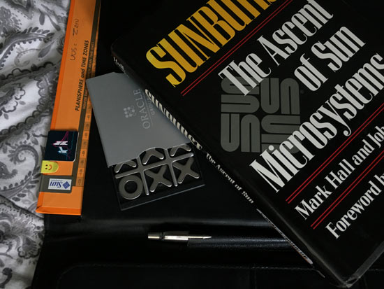
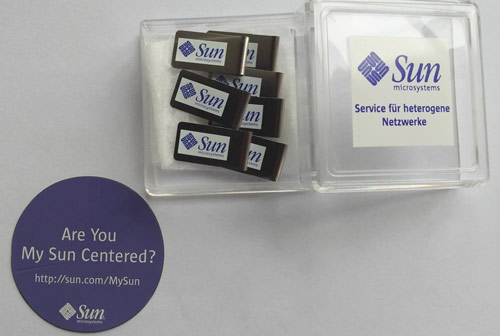
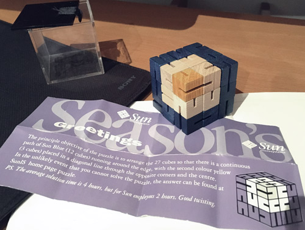
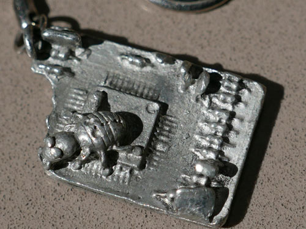
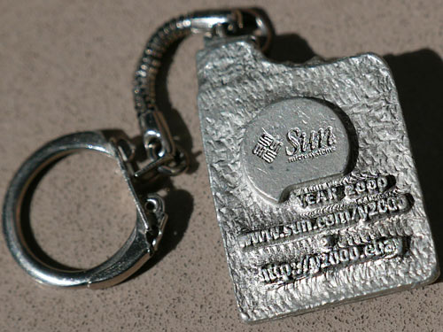
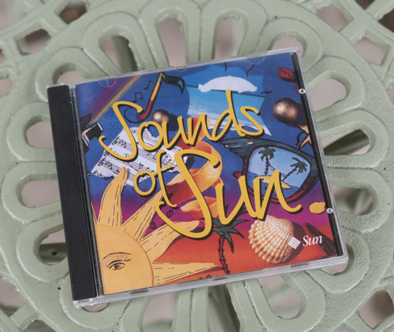
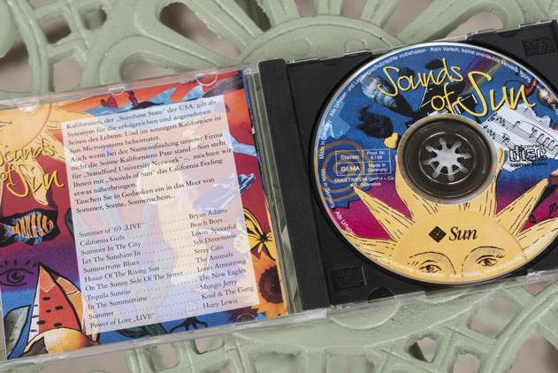

A faux leather folder and some grid paper. The memo paper is not sticky, just tears from the top. I'm using these supplies for my studies!

A book detailing the rise of Sun Microsystems in the 80s(?) I've yet to read it... Behind the inside of the folder, and if it counts an oracle naughts and crosses game.

Some paperclips or Bookmarks? I use them as bookmarks... Also featured is a fridge magnet.

A snake puzzle cube! Unsure what the colours/image represent, but very cool!
 
This keychain is my favourite, not sure what it is about it, but it keeps my eyes locked. From the year I was born!
 
Sounds of Sun... hmm I wonder why these tracks were chosen.